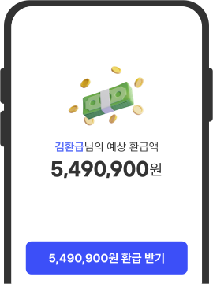
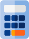

매년 세법이 바뀌어도
전문 세무사와 협업형 AI가
세금 환급을 꼼꼼하게 챙겨 드려요

국세청 출신 전문가와 6대 전문직 협업 네트워크로
절세와 환급, 모든 세무 서비스를 원스톱으로 제공합니다.
더 나은 세무 서비스를 경험하세요
개인과 기업의 상황을 분석하여
놓치기 쉬운 공제 항목까지
찾아내어 세금 부담을 최소화 합니다.
전문 세무사와 AI 기반 시스템이
복잡한 환급 절차를
신속하고 정확하게 해결합니다.
세무·법률·평가까지 아우르는
6대 전문가가 협업하여
원스톱 통합 서비스를 제공합니다.
신뢰받아 온 결과, 수치로 증명합니다
납세자 중심의 맞춤형 전략 솔루션
매년 세법이 바뀌어도

매출·매입 관리부터 장부 작성까지,
세무 신고와 4대 보험 업무를
체계적으로 지원합니다.

사전 준비부터 미래 자산 설계까지,
개인 상황에 맞춘 1:1 절세 전략을 제공합니다.
통합 서비스, 검증된 전문성